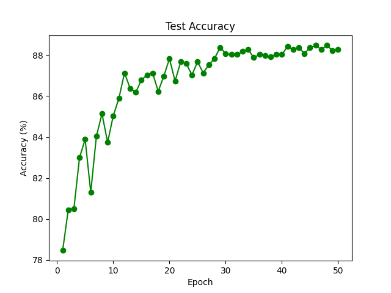

Skin Lesions We Detect
Our Machine Learning Model
Training Model Architecture

Neural network architecture designed for accurate skin lesion classification
LLM Feedback Pipeline

CoT reasoning to give best diagnostic accuracy
Training Accuracy
Training accuracy reaches around 90% on test dataset
Training Loss

Training loss over time as model approaches 50 epochs